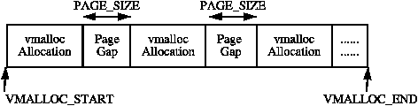
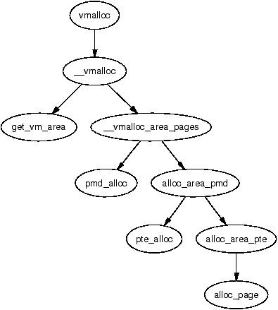
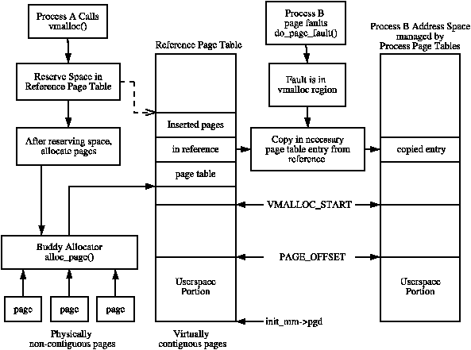

图 7.4：调用关系图：vfree()
在处理大量内存时，无论从缓存还是从内存访问延迟的角度考虑，使用物理上连续的页面都更为可取。然而，由于伙伴分配器存在外部碎片（external fragmentation）问题，这并非总能做到。Linux 通过 vmalloc() 提供了一种机制：使用物理上不连续，但在虚拟内存中连续的内存。
内核在虚拟地址空间中预留了一块位于 VMALLOC_START 和 VMALLOC_END 之间的区域。VMALLOC_START 的位置取决于可用物理内存的大小，但该区域至少为 VMALLOC_RESERVE 大小，在 x86 上为 128MiB。该区域的具体大小在第 4.1 节中讨论。
这一区域中的页表会按需调整，以指向由普通物理页面分配器分配的物理页面。这意味着分配必须是硬件页面大小的整数倍。由于分配操作需要修改内核页表，vmalloc() 能够映射的内存量受限，因为只有 VMALLOC_START 到 VMALLOC_END 之间的虚拟地址空间可用。因此，它在内核核心代码中使用得很谨慎。在 2.4.22 中，它仅用于存储交换映射信息（见第 11 章）以及将内核模块加载到内存中。
本章篇幅较短，开头将描述内核如何跟踪 vmalloc 地址空间中哪些区域被使用，以及区域是如何分配和释放的。
vmalloc 地址空间使用资源映射分配器（resource map allocator）[Vah96] 进行管理。struct vm_struct 负责存储（基址，大小）对，其定义在 <linux/vmalloc.h> 中：
14 struct vm_struct {
15 unsigned long flags;
16 void * addr;
17 unsigned long size;
18 struct vm_struct * next;
19 };
本来可以使用完整的 VMA 结构，但其中包含许多对 vmalloc 区域不适用的额外信息，会造成浪费。下面简要说明这个小结构体中的各字段。
显然，这些区域通过 next 字段串联起来，并按地址排序以便于简单查找。每个区域之间至少由一个页面分隔，以防越界。这一点如图 7.1 中各区域之间的间隙所示。

当内核希望分配一个新区域时，vm_struct 链表会被 get_vm_area() 函数线性搜索。该结构体所需的空间由 kmalloc() 分配。当虚拟区域用于为 IO 重新映射（通常称为 ioremapping）时，会直接调用此函数来映射所请求的区域。

vmalloc()、vmalloc_dma() 和 vmalloc_32() 这几个函数用于分配在虚拟地址空间上连续的内存区域。它们都只接受一个参数 size，并将其向上对齐到下一个页面边界。它们都返回新分配区域的线性地址。
| void * vmalloc(unsigned long size) |
| 在 vmalloc 空间中分配满足请求大小的若干页面 |
| void * vmalloc_dma(unsigned long size) |
| 从 ZONE_DMA 分配若干页面 |
| void * vmalloc_32(unsigned long size) |
| 分配适用于 32 位寻址的内存。这确保物理页帧位于 ZONE_NORMAL，以满足 32 位设备的要求 |
正如图 7.2 所示的调用关系图所示，分配该区域分为两个步骤。第一步由 get_vm_area() 完成，它查找一个足够大的区域以容纳请求。它在 vm_struct 的线性链表中搜索，并返回一个描述已分配区域的新结构体。
第二步是通过 vmalloc_area_pages() 分配必要的 PGD 项、通过 alloc_area_pmd() 分配 PMD 项、通过 alloc_area_pte() 分配 PTE 项，最后通过 alloc_page() 分配页面。
vmalloc() 更新的页表并非当前进程的页表，而是存放于 init_mm→pgd 的参考页表。这意味着进程在访问 vmalloc 区域时会触发缺页异常，因为其页表并未指向正确的区域。缺页处理代码中有一段特殊逻辑，能够识别故障发生在 vmalloc 区域，并使用主页表中的信息更新当前进程的页表。vmalloc() 与伙伴分配器及缺页处理之间的关系如图 7.3 所示。

vfree() 函数负责释放一个虚拟区域。它线性搜索 vm_struct 链表，找到目标区域后调用 vmfree_area_pages() 释放该内存区域。
vmfree_area_pages() 与 vmalloc_area_pages() 的作用完全相反。它遍历页表，释放区域对应的页表项和相关页面。
| void vfree(void *addr) |
| 释放由 vmalloc()、vmalloc_dma() 或 vmalloc_32() 分配的内存区域 |
非连续内存分配在 2.6 中基本保持不变。主要区别在于内部 API 略有不同，影响了页面分配的时机。在 2.4 中，vmalloc_area_pages() 负责开始页表遍历，并在到达 PTE 时由 alloc_area_pte() 分配页面。在 2.6 中，所有页面都由 __vmalloc() 预先分配，然后放入一个数组中，传给 map_vm_area()，由其插入内核页表。
get_vm_area() API 略有变化。被调用时，它的行为与之前一致，会在整个 vmalloc 虚拟地址空间中搜索空闲区域。然而，调用者可以通过直接调用 __get_vm_area() 并指定范围来只搜索 vmalloc 地址空间的子集。该用法仅在 ARM 架构加载模块时使用。
最后一个值得注意的变化是引入了新接口 vmap()，用于将一组页面数组插入到 vmalloc 地址空间，仅由声音子系统核心使用。该接口被回移植到 2.4.22，但完全未被使用。它要么是一次意外的回移植，要么是为了便于应用需要 vmap() 的厂商专用补丁而合并进来的。
原文来源：understand010.html（《Understanding the Linux Virtual Memory Manager》by Mel Gorman）